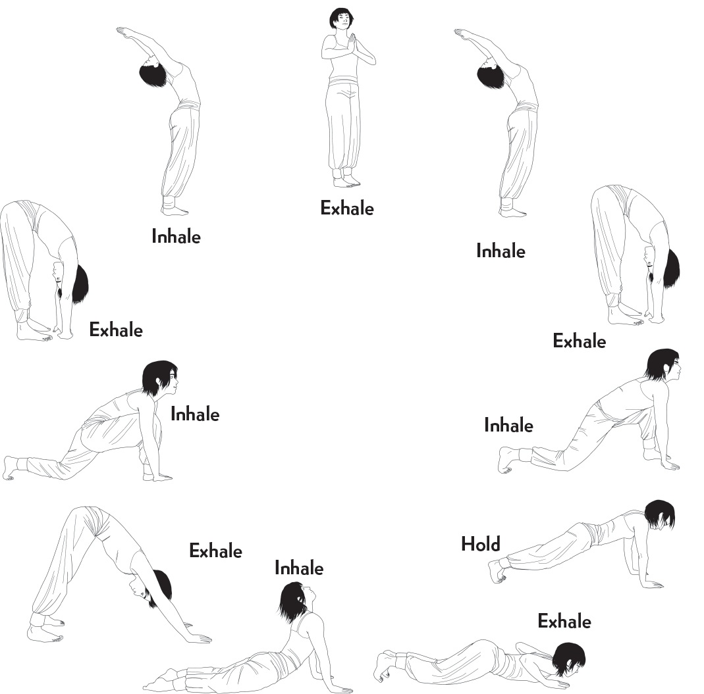

Tai chi
Also known as t’ai chi ch’uan (or taijiquan), tai chi is a Chinese martial art that
can be traced back hundreds of years to Buddhism and Confucianism; it is very
popular in Japan, too.
According to Chinese tradition, it was created by the Taoist master and martial arts practitioner Zhang Sanfeng, though it was Yang Luchan who in the
nineteenth century brought the form to the rest of the world.
Tai chi was originally a neijia, or internal martial art, meaning its goal was personal growth. Focused on self-defense, it teaches those who practice it to
defeat their adversaries by using the least amount of force possible and by relying
on agility.
Tai chi, which was also seen as a means of healing body and mind, would go on to be used more frequently to foster health and inner peace. To encourage its
citizens to be more active, the Chinese government promoted it as an exercise,
and it lost its original connection to martial arts, becoming instead a source of
health and well-being accessible to all.
Styles of tai chi
There are different schools and styles of tai chi. The following are the best
known:
Chen-style: alternates between slow movements and explosive ones Yang-style: the most widespread of the forms; characterized by slow, fluid movements
Wu-style: utilizes small, slow, deliberate movements
Hao-style: centered on internal movements, with almost microscopic external movements; one of the least practiced forms of tai chi, even in China
Despite their differences, these styles all have the same objectives:
1. To control movement through stillness
2. To overcome force through finesse
3. To move second and arrive first
4. To know yourself and your opponent
The ten basic principles of tai chi
According to the master Yang Chengfu, the correct practice of tai chi follows ten
basic principles:
1. Elevate the crown of your head, and focus all your energy there.
2. Tighten your chest and expand your back to lighten your lower body.
3. Relax your waist and let it guide your body.
4. Learn to differentiate between heaviness and lightness, knowing how your weight is distributed.
5. Relax the shoulders to allow free movement of the arms and promote the flow of energy.
6. Value the agility of the mind over the strength of the body.
7. Unify the upper and lower body so they act in concert.
8. Unify the internal and the external to synchronize mind, body, and breath.
9. Do not break the flow of your movement; maintain fluidity and harmony.
10. Look for stillness in movement. An active body leads to a calm mind.
Imitating clouds
One of the best-known movements in tai chi consists of following the form of
clouds in an exercise called Wave Hands Like Clouds. Here are the steps:
1. Extend your arms in front of you with your palms down.
2. Turn your palms to face in, as though you were hugging a tree trunk.
3. Open your arms out to the side.
4. Bring the left arm up and center, and the right arm down and center.
5. Trace the shape of a ball in front of your body.
6. Turn your left palm toward your face.
7. Shift your weight to your left foot and pivot from your hip toward that side, while your eyes follow the movement of your hand.
8. Bring your left hand to your waist and your right hand in front of your face.
9. Shift your weight to your right foot.
10. Pivot toward your right, looking at your raised right hand the entire time.
11. Repeat this movement fluidly, shifting your weight from one foot to the
other as you reposition your hands.
12. Stretch your arms out in front of you again and bring them down slowly,
returning to your initial position.